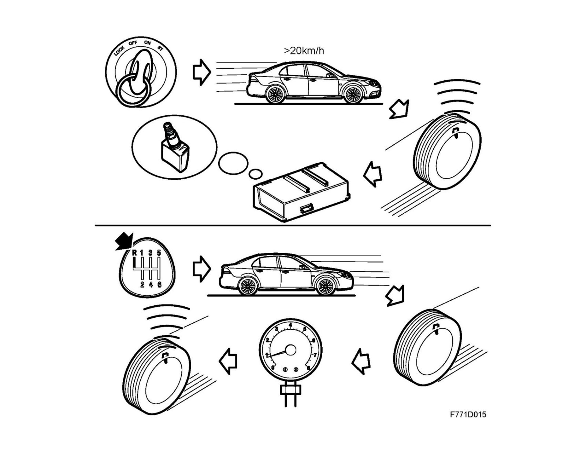
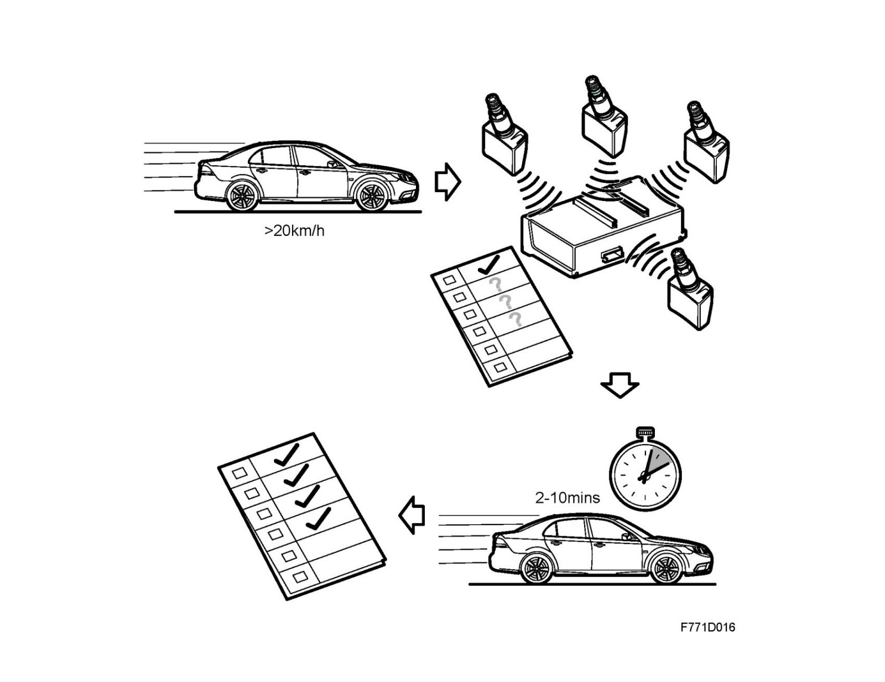
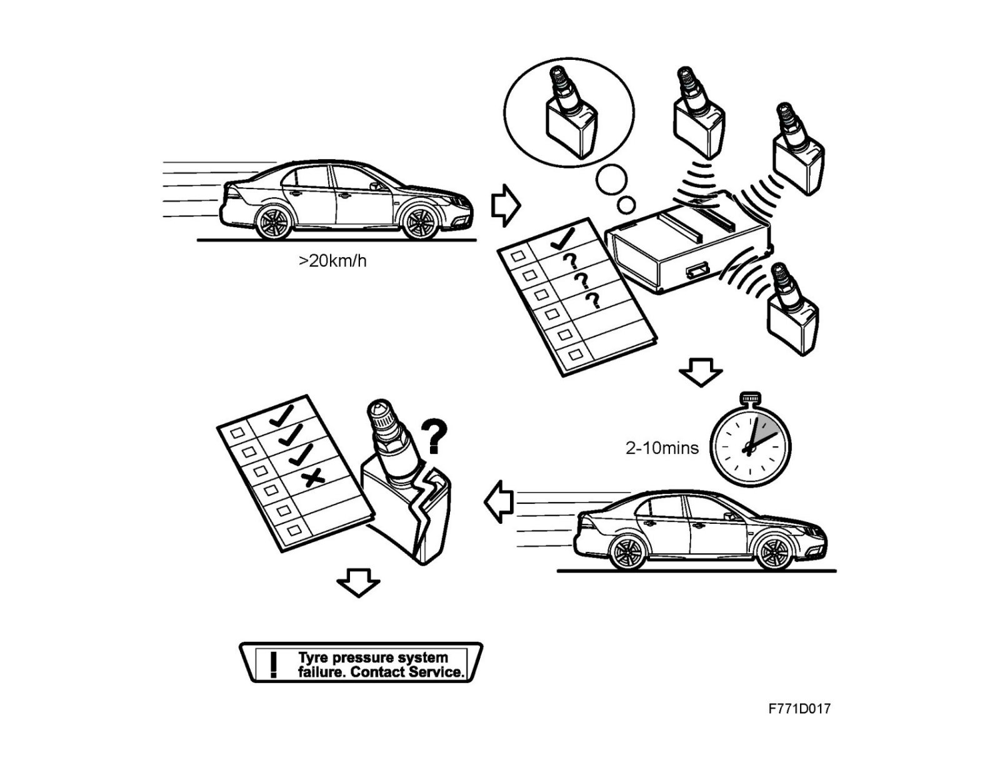
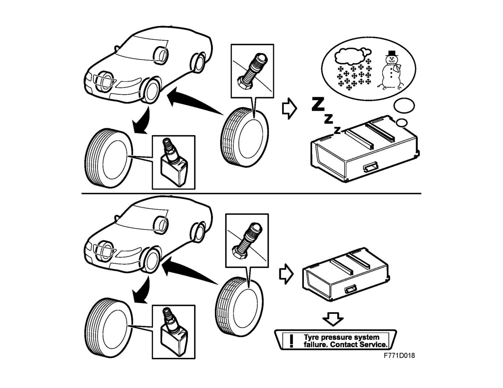
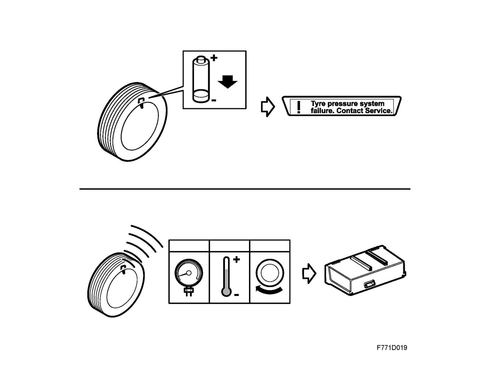
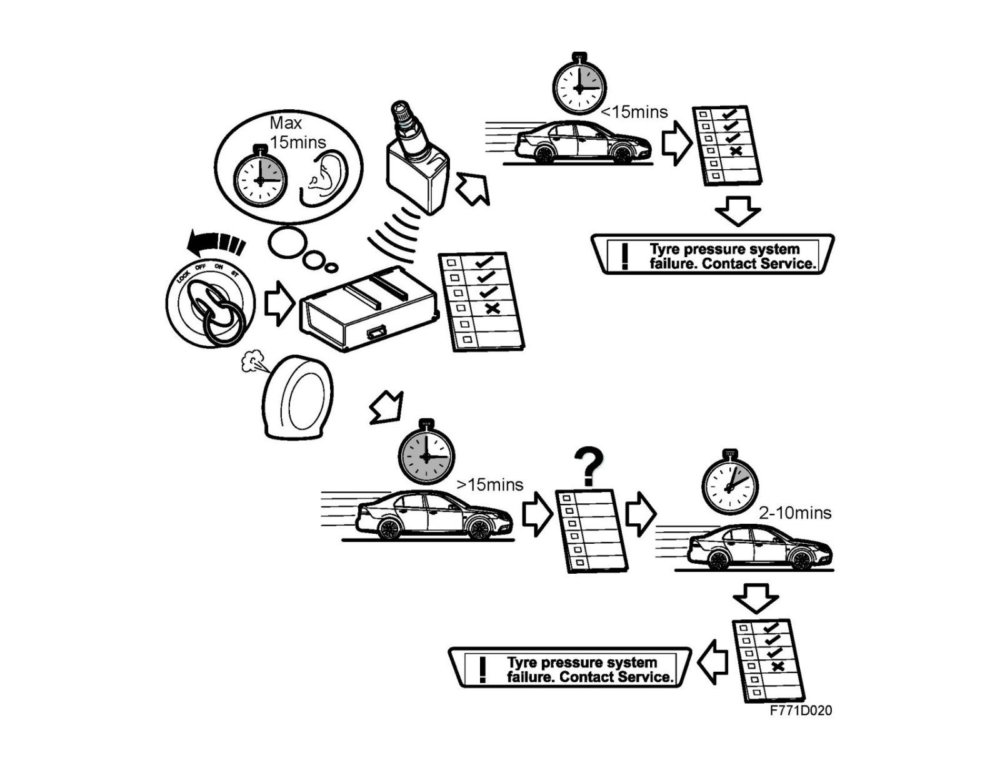
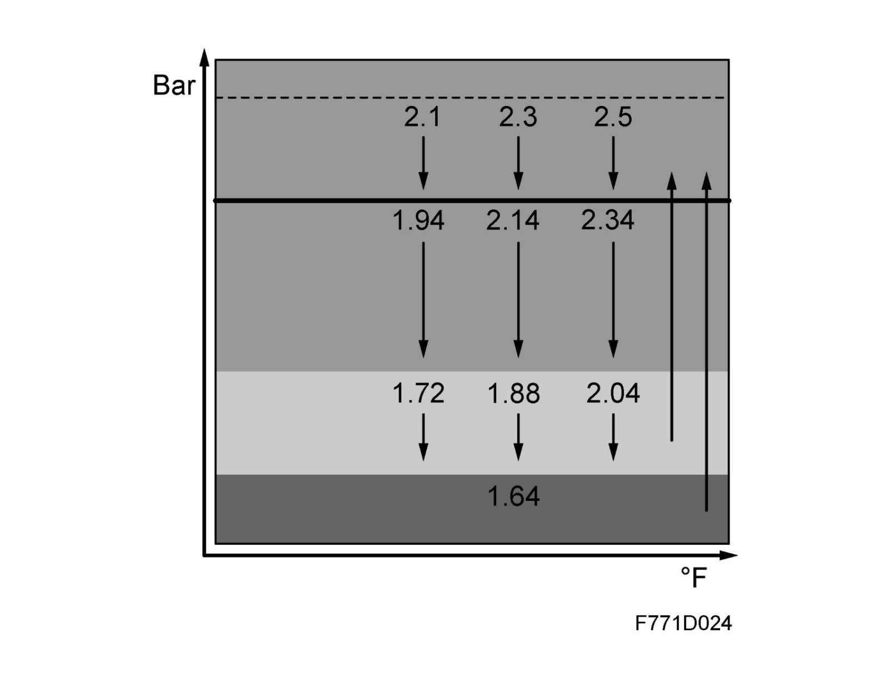
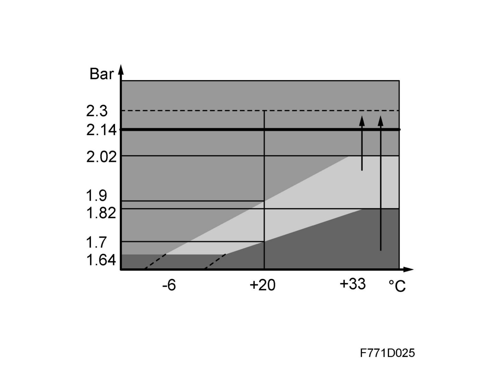
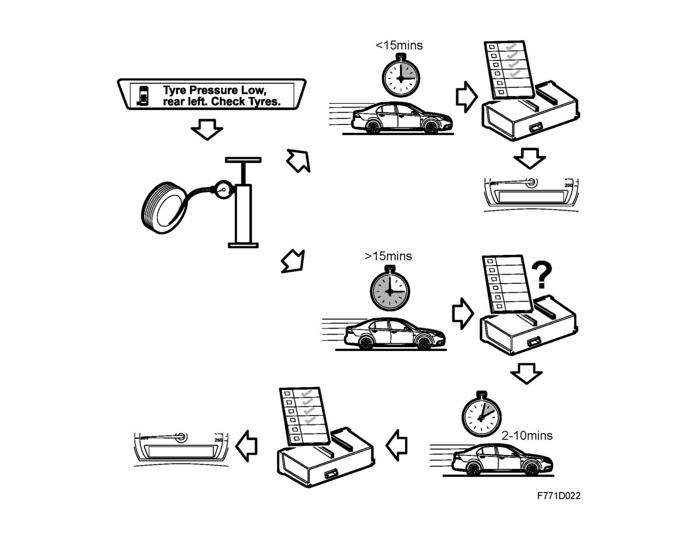

Tire Pressure Monitoring System (TPMS), Detailed Description
Tire pressure monitoring system (TPMS), detailed descriptionWarning
The system is designed as an aid to the driver. The driver is always responsible for ensuring that the tires have the right pressure.
For the best possible safety, economy and comfort, tire pressure should be checked regularly, even if the tire pressure monitoring system has not issued an alarm.
Note
Bear in mind that TPMS measures the air pressure with much greater accuracy than the gauges found at filling stations and the like.
General
The tire pressure monitoring system warns the driver of a pressure drop in any of the tires. The system is operational at vehicle speeds exceeding 20 km/h. The control module is calibrated for the nominal tire pressure and warns the driver via a warning message in SID if pressure drops below the nominal pressure. If pressure drops to 1.64 bar (24 psi) or by 0.2 bar/min (3 psi/min) an alarm message is shown in SID to warn of a puncture.
The control module uses I-bus information on vehicle speed and gear position.

Modes
As long as the ignition key is in the ON position, tire pressure is continually monitored and the system operates in two main modes:
Active mode
The system activates when vehicle speed exceeds 20 km/h. The sensors then begin to transmit tire pressure information at regular intervals. If any value deviates from tire pressure limits, the control module transmits a warning or alarm message on the I-bus. MIU/SID reads the message and shows it on the display.

When reversing, the control module makes use of the bus message indicating reverse gear is engaged. It then does not read values from the sensors.
Standby mode
The system goes into standby mode when vehicle speed is below 20 km/h.
When in standby mode, the sensors continue monitoring tire pressure, but do not transmit the information. If any tire pressure falls to one of the alarm limits, a message is sent to the control module.
The sensors resume active mode when vehicle speed again exceeds 20 km/h.
Automatic teach-in
When warming up after start, the first period of the active mode is a teach-in procedure which lasts until each of the four sensors (which each have their own unique code) is identified. This communication "teaches" the control module which sensor works with each wheel. This procedure takes approximately 10 minutes. If the system cannot identify where the sensor it, it presumes that it is in the same position as it was the last time the car was driven.

If the control module does not receive communication from one or more (but not all) sensors within 10 minutes of driving over 20 km/h, a system fault message is transmitted on the I-bus. This is read by MIU/SID and shown on the display.

If the control module cannot make contact with the car's sensors during the teach-in phase, i.e. all wheels are missing sensors, the system automatically assumes winter mode, except in the US/CA markets. In these markets, the control module transmits a system fault message on the I-bus after each teach-in. This message is read by MIU/SID and is shown on the display.

Driving
Once the teach-in phase is complete, the sensors remain active at speeds over 20 km/h. This means that the wheels must rotate for the system to run. This saves energy. The battery service life is about 10 years or 160,000 km. When battery voltage becomes too low, the control module transmits a system fault message on the I-bus. The message is read by MIU/SID and is shown on the display.

The sensors measure pressure and temperature in the tire as well as the wheel's direction of rotation. The temperature value is not used in the US/CA markets.
The sensors are mounted in special Saab rims. Normally, each sensor takes a reading every 10 seconds. During the teach-in phase, it transmits information every 30 seconds. Otherwise, it transmits once per minute. If pressure drops by more than 0.08 bar (1 psi) since the previous reading, there is a new transmission after 10 seconds.
Deactivation
When the ignition key is turned to the LOCK position, the control module continues to listen for sensor signals for 15 minutes. The sensors are activated if tire pressure falls below the warning limit. If the ignition is switched on again during this time period, the system operates again without teach-in and any warning message appears immediately in MIU/SID. After 15 minutes, the system deactivates and a new teach-in is required upon start-up. It is first after the teach-in that a message can be displayed.

Tire pressure
Upon delivery, the system is programmed for a nominal tire pressure according to the level specified on the car's label. The level is determined by the type of wheel and equipment the vehicle has.
When replacing the control module or changing tire dimension, the control module must be calibrated using Tech2.
Error messages and limit values
The tire pressure monitoring system can display a warning message or an alarm message for each tire. The message indicates how serious the fault is and the tire in question. A system fault message can also be displayed.
A warning message can by acknowledged and cleared from MIU/SID using the Clear button in the steering wheel controls. If the fault persists, the message will be shown the next time the ignition is switched on.
With an alarm message, the text can only be cleared while the fault system is shown until the time point the fault is remedied.
US/CA markets
There is no compensation for tire temperature.

The limit values are based on nominal tire pressure programmed into the control module. This, in turn, depends on the type of tire on the car.
For example, if the system is programmed for a nominal tire pressure of 2.3 bar (33 psi), a warning message is shown if tire pressure drops to 1.88 bar (27 psi). An alarm message is shown for all nominal tire pressure when pressure drops to 1.64 bar (24 psi). In order to reset the warning/alarm message, the tire must be pumped to at least 2.14 bar (31 psi).
Warning messages are specific to the wheel, e.g.:
Tire pressure low, left rear.
Check the tire.
An alarm message is also shown when tire pressure drops by 0.2 bar/min (3 psi/min) or faster. The alarm message is specific to the wheel, e.g.:
Puncture left rear.
Stop.
Other markets.
The limit values are based on nominal tire pressure programmed into the control module. This, in turn, depends on the type of tire on the car.
Stop.

Tire temperature between -10°C and +35°C affects the limit values.
For example, if the system is programmed for a nominal tire pressure of 2.3 bar (33 psi), if tire temperature is +20°C a warning message is shown when tire pressure has dropped to 1.9 bar (27 psi). An alarm message is shown when tire pressure drops to 1.7 bar (25 psi). In order to reset the warning/alarm message, the tire must be pumped to at least 2.14 bar (31 psi). If tire temperature is +35°C, the warning message value is 2.02 bar (29) and the alarm message value is 1.82 bar (26 psi).
If tire pressure is less than 200 mbar (3 psi) below the limit value, a warning message will first appear after 12 minutes and an alarm message will first appear after 4 minutes. This is intended to reduce the risk of error messages when starting on a cold morning or the like. If tire pressure is below 1.64 bar, the alarm message is shown immediately.
The warning message is specific to the wheel, e.g.:
Tire pressure low, left rear.
Check the tire.
An alarm message is also shown when tire pressure drops by 0.2 bar/min (3 psi/min) or faster. The alarm message is specific to the wheel, e.g.:
Puncture left rear.
System fault message
This is a type of warning message. It appears when there is a fault in the control module or a sensor is missing:
System fault.
Contact the workshop.
This message is shown in conditions such as the customer switching to the spare wheel after a flat tire. The system will then transmit a system fault message on the I-bus since the spare wheel does not have a sensor. The message is read by MIU/SID and is shown on the display.
Filling air
When the tire is filled with air, the pressure must reach a minimum level for it to be possible to reset the error message. This level depends on tire type and, in certain markets, tire temperature.
If the air is filled to the right level within 15 minutes of the key being switched to the LOCK position (and perhaps also removed), no error message is shown upon start. If the car is started after the end of the standby mode, the error message remains until teach-in is complete and the system has detected that tire pressure lies above the limit value.
